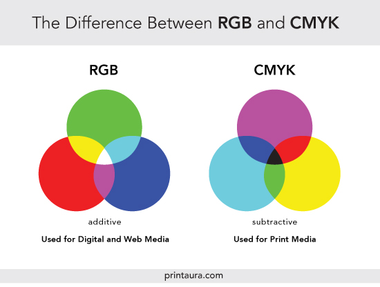

Wat is het?
het kleurenstelsel kan je gebruiken om kleur toe tevoegen aan je website. Er zijn twee verschillende kleurenstelsellen, CMYK en RGB. Maar meestal word RGB gebruikt.
RGB staat voor red, Green en blue, en CMYK staat voor Cyan (cyaan) Magenta,
yellow (geel) en key (zwart).
Rgb werkt door licht toe te voegen, terwijl CMYK het licht juist weghaalt.
Hier is een reference image van beide het RGB kleurenstelsel en het CMYK kleurenstelsel.

Hoe pas ik het toe op mijn website
Je kan alle attributen die je hebt een kleuren geven. meestal gebruiken mensen een
CSS bestand
om attributen een kleur te geven geven. Laten we bijvoorbeeld de header pakken. Deze kan je kleur geven door in je CSS een header tag te maken. dit doe je zo
header {}
Hierna, voeg je de regel toe om iets kleur te geven.